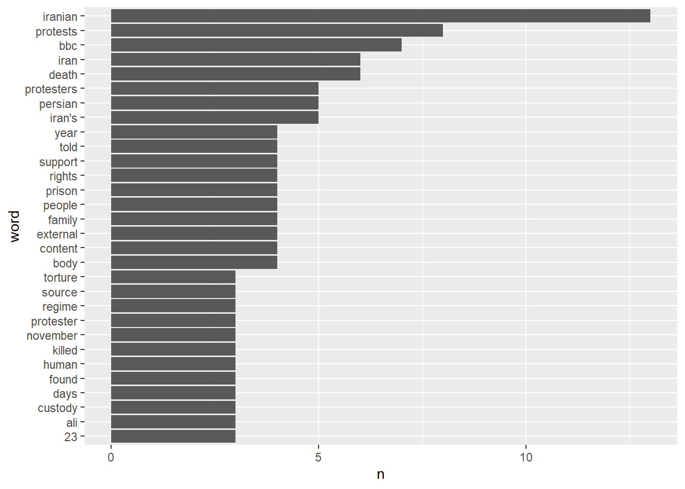

library(tidyverse)
library(rvest)Webscrape the BBC
Load Packages
Scrape the Page
# Three steps to scrape a webpage:
# 1. Read html from site/page
page <- read_html('https://www.bbc.com/news/world-middle-east-64062900')
# 2. Get the elements on that page that you want
paragraphs <- html_elements(page, 'p')
# 3. From html elements convert into text
text <- html_text2(paragraphs)Print that text (tidily)
This text should overflow across the PDF margins. Not pretty.
text [1] "A hundred days after they began, the longest running anti-government protests in Iran since the 1979 Islamic revolution have shaken the regime, but at a heavy cost to the people."
[2] "More than 500 protesters, including 69 children, have been killed, according to the Human Rights Activists' News Agency (HRANA). Two protesters have been executed and at least 26 others face the same fate, after what Amnesty International calls \"sham trials\"."
[3] "Although nationwide demonstrations have swept Iran before - once in 2017 lasting until early 2018, and another in November 2019 - the current protests are unique, as they involve people from across society and women are taking a lead role under the slogan \"Woman, Life, Freedom\"."
[4] "Some Iranian celebrities have taken irrevocable steps to support protests, leading to their arrest or exile."
[5] "Taraneh Alidoosti, a well-known Iranian actress, is being held in the notorious Evin prison after she condemned the execution of a young protester. Previously, she published a photo of herself without a mandatory headscarf, holding a sign with the protesters' slogan."
[6] "\"I have worked with Taraneh on four films and now she is in prison for her rightful support of her fellow countrymen and her opposition to the unjust sentences being issued,\" Asghar Farhadi, who directed Alidoosti in his Oscar-winning film The Salesman, wrote on Instagram."
[7] "\"If showing such support is a crime, then tens of millions of people of this land are criminals,\" Mr Farhadi added."
[8] "Another prominent Iranian actress who has left the country, Pegah Ahangarani, told BBC Persian: \"Both sides have been radicalised, the regime in its crackdown and people in film industry in their response."
[9] "\"Iran cannot go back to pre-Mahsa Amini era,\" referring to the Kurdish Iranian woman whose death in the custody of Iran's morality police on 16 September sparked the protests."
[10] "Hamid Farrokhnezhad, another well-known Iranian actor, moved to the US earlier this month and immediately called Iranian Supreme Leader Ali Khamenei a \"dictator\", comparing him to Franco, Stalin and Mussolini."
[11] "Ali Karimi, one of Iran's most celebrated former footballers, who was living in Dubai, also supported the protests. He said Iranian intelligence agents threatened to kill him, eventually leading him to move to the US."
[12] "Karimi is now one of the most outspoken critics of the Iranian regime on his Instagram account, with more than 14 million followers."
[13] "Another Iranian football icon, Ali Daei, had his jewellery shop and restaurant shut down by the Iranian judiciary after coming out in support of a nationwide strike."
[14] "What also marks the current protests out from previous ones is the emerging use by demonstrators of petrol bombs."
[15] "These have been used against bases of the Basij militia and Hawza, or religious schools for Shia Muslim clerics."
[16] "Iran's Generation Z has been at the forefront of these protests, defying strict religious rule and setting new trends such as burning headscarves."
[17] "Another new trend among young protesters is so-called \"turban tossing\" - sneaking up behind Shia Muslim clerics, knocking their turban off and running away."
[18] "Allow Twitter content?"
[19] "This article contains content provided by Twitter. We ask for your permission before anything is loaded, as they may be using cookies and other technologies. You may want to read Twitter’s cookie policy, external and privacy policy, external before accepting. To view this content choose ‘accept and continue’."
[20] "A 16-year-old boy, Arshia Emamgholizadeh, was arrested in the north-western city of Tabriz last month, accused of \"turban tossing\"."
[21] "He was held for 10 days before being released. Two days later, he committed suicide, something his family blames on his treatment in prison. During his detention, Arshia had been beaten with batons and given unknown pills, a source close to the family told BBC Persian."
[22] "Iranian authorities have not only cracked down on protesters, but have also used the bodies of those who have died in custody or been killed as bargaining chips to silence the families of victims."
[23] "Fearing such pressure, the brother of a killed protester stole his body from a morgue, driving around town for hours, a source told BBC Persian."
[24] "Mehran Samak, 27, was shot in the head in the northern city of Bandar Anzali for honking his car's horn in celebration of Iran's elimination from the World Cup on 29 November."
[25] "Another family say they found shocking signs of torture on the body of their 23-year-old son, Hamed Salahshoor, who died in custody when they exhumed his body after he was forcibly buried 18 miles (30km) away from their home town."
[26] "So far, two men have been executed after being convicted of vaguely defined national security charges linked to the protests, in what human rights groups have condemned as gross miscarriages of justice."
[27] "Many of those on death row have said they were tortured."
[28] "The Kurdistan Human Rights Network, a non-governmental organisation, said a Kurdish-Iranian rapper, Saman Yasin, who was sentenced to death, attempted to kill himself on Tuesday. The rights group has previously said Yasin was tortured while in detention. Iran's Supreme Court upheld an appeal against his death sentence on Saturday and ordered him to be retried."
[29] "In an audio file obtained by BBC Persian, a 26-year-old amateur bodybuilder, Sahand Noormohammadzadeh, alleges that he was subjected to several mock executions in prison."
[30] "Mr Noormohammadzadeh was sentenced to death in November after he was found guilty of \"enmity against God\" (defined under Iranian law as \"creating public insecurity\" with a weapon). He was accused of blocking traffic on a highway by tearing down railings during a protest in Tehran on 23 September, which he denied."
[31] "BBC Persian has also obtained X-ray images that show three ribs of an imprisoned radiologist were broken, piercing his lung. Dr Hamid Ghare-Hasanlou was found guilty of \"corruption on Earth\", a crime which carries death penalty."
[32] "An informed source told Amnesty International that Dr Ghare-Hasanlou was subjected to torture and ill-treatment in order to extract a forced \"confession\"."
[33] "This video can not be played"
[34] "Watch: The secret diaries of women protesting in Iran"
[35] "Iran protester's family find torture signs on body"
[36] "Iran executes 23-year-old protester in public"
[37] "Disney ends $867m Florida plan amid DeSantis feud"
[38] "Italy floods leave 13 dead and thousands displaced"
[39] "Man saved after being spotted hanging out of skylight. VideoMan saved after being spotted hanging out of skylight"
[40] "Taiwan looms large as Japan prepares to host G7"
[41] "Serbians hand in guns after two mass shootings"
[42] "The girl whose parents were deported while she was at school"
[43] "How a Canadian walrus ended up in Abu Dhabi"
[44] "'We thought it'd be a crisis we could live through'"
[45] "Pakistan is on the edge. Should India be worried?"
[46] "'We are selling a product that we hope gets discontinued'"
[47] "The long-lasting legacy of Apollo"
[48] "Once banned, boxing now thrives in this former warzone"
[49] "Three job categories safe from AI"
[50] "The films 'too bad for the cinema'"
[51] "Why did the US plan to nuke the Moon?"
[52] "© 2023 BBC. The BBC is not responsible for the content of external sites. Read about our approach to external linking." We can solve this with the str_wrap() function from tidyverse , which inserts carriage returns (‘\n’) to convert the text into paragraphs, and the cat() function, which prints the text.
text |>
str_wrap() |>
cat()A hundred days after they began, the longest running anti-government protests
in Iran since the 1979 Islamic revolution have shaken the regime, but at a heavy
cost to the people. More than 500 protesters, including 69 children, have been killed, according
to the Human Rights Activists' News Agency (HRANA). Two protesters have
been executed and at least 26 others face the same fate, after what Amnesty
International calls "sham trials". Although nationwide demonstrations have swept Iran before - once in 2017 lasting
until early 2018, and another in November 2019 - the current protests are
unique, as they involve people from across society and women are taking a lead
role under the slogan "Woman, Life, Freedom". Some Iranian celebrities have taken irrevocable steps to support protests,
leading to their arrest or exile. Taraneh Alidoosti, a well-known Iranian actress, is being held in the notorious
Evin prison after she condemned the execution of a young protester. Previously,
she published a photo of herself without a mandatory headscarf, holding a sign
with the protesters' slogan. "I have worked with Taraneh on four films and now she is in prison for her
rightful support of her fellow countrymen and her opposition to the unjust
sentences being issued," Asghar Farhadi, who directed Alidoosti in his
Oscar-winning film The Salesman, wrote on Instagram. "If showing such support is a crime, then tens of millions of people of this
land are criminals," Mr Farhadi added. Another prominent Iranian actress who has left the country, Pegah Ahangarani,
told BBC Persian: "Both sides have been radicalised, the regime in its crackdown
and people in film industry in their response. "Iran cannot go back to pre-Mahsa Amini era," referring to the Kurdish Iranian
woman whose death in the custody of Iran's morality police on 16 September
sparked the protests. Hamid Farrokhnezhad, another well-known Iranian actor, moved to the US earlier
this month and immediately called Iranian Supreme Leader Ali Khamenei a
"dictator", comparing him to Franco, Stalin and Mussolini. Ali Karimi, one of Iran's most celebrated former footballers, who was living
in Dubai, also supported the protests. He said Iranian intelligence agents
threatened to kill him, eventually leading him to move to the US. Karimi is now one of the most outspoken critics of the Iranian regime on his
Instagram account, with more than 14 million followers. Another Iranian football icon, Ali Daei, had his jewellery shop and restaurant
shut down by the Iranian judiciary after coming out in support of a nationwide
strike. What also marks the current protests out from previous ones is the emerging use
by demonstrators of petrol bombs. These have been used against bases of the Basij militia and Hawza, or religious
schools for Shia Muslim clerics. Iran's Generation Z has been at the forefront of these protests, defying strict
religious rule and setting new trends such as burning headscarves. Another new trend among young protesters is so-called "turban tossing" -
sneaking up behind Shia Muslim clerics, knocking their turban off and running
away. Allow Twitter content? This article contains content provided by Twitter. We ask for your permission
before anything is loaded, as they may be using cookies and other technologies.
You may want to read Twitter’s cookie policy, external and privacy policy,
external before accepting. To view this content choose ‘accept and continue’. A 16-year-old boy, Arshia Emamgholizadeh, was arrested in the north-western city
of Tabriz last month, accused of "turban tossing". He was held for 10 days before being released. Two days later, he committed
suicide, something his family blames on his treatment in prison. During his
detention, Arshia had been beaten with batons and given unknown pills, a source
close to the family told BBC Persian. Iranian authorities have not only cracked down on protesters, but have also used
the bodies of those who have died in custody or been killed as bargaining chips
to silence the families of victims. Fearing such pressure, the brother of a killed protester stole his body from a
morgue, driving around town for hours, a source told BBC Persian. Mehran Samak, 27, was shot in the head in the northern city of Bandar Anzali for
honking his car's horn in celebration of Iran's elimination from the World Cup
on 29 November. Another family say they found shocking signs of torture on the body of their
23-year-old son, Hamed Salahshoor, who died in custody when they exhumed his
body after he was forcibly buried 18 miles (30km) away from their home town. So far, two men have been executed after being convicted of vaguely defined
national security charges linked to the protests, in what human rights groups
have condemned as gross miscarriages of justice. Many of those on death row have said they were tortured. The Kurdistan Human Rights Network, a non-governmental organisation, said a
Kurdish-Iranian rapper, Saman Yasin, who was sentenced to death, attempted to
kill himself on Tuesday. The rights group has previously said Yasin was tortured
while in detention. Iran's Supreme Court upheld an appeal against his death
sentence on Saturday and ordered him to be retried. In an audio file obtained by BBC Persian, a 26-year-old amateur bodybuilder,
Sahand Noormohammadzadeh, alleges that he was subjected to several mock
executions in prison. Mr Noormohammadzadeh was sentenced to death in November after he was found
guilty of "enmity against God" (defined under Iranian law as "creating public
insecurity" with a weapon). He was accused of blocking traffic on a highway
by tearing down railings during a protest in Tehran on 23 September, which he
denied. BBC Persian has also obtained X-ray images that show three ribs of an imprisoned
radiologist were broken, piercing his lung. Dr Hamid Ghare-Hasanlou was found
guilty of "corruption on Earth", a crime which carries death penalty. An informed source told Amnesty International that Dr Ghare-Hasanlou
was subjected to torture and ill-treatment in order to extract a forced
"confession". This video can not be played Watch: The secret diaries of women protesting in Iran Iran protester's family find torture signs on body Iran executes 23-year-old protester in public Disney ends $867m Florida plan amid DeSantis feud Italy floods leave 13 dead and thousands displaced Man saved after being spotted hanging out of skylight. VideoMan saved after
being spotted hanging out of skylight Taiwan looms large as Japan prepares to host G7 Serbians hand in guns after two mass shootings The girl whose parents were deported while she was at school How a Canadian walrus ended up in Abu Dhabi 'We thought it'd be a crisis we could live through' Pakistan is on the edge. Should India be worried? 'We are selling a product that we hope gets discontinued' The long-lasting legacy of Apollo Once banned, boxing now thrives in this former warzone Three job categories safe from AI The films 'too bad for the cinema' Why did the US plan to nuke the Moon? © 2023 BBC. The BBC is not responsible for the content of external sites. Read
about our approach to external linking.Once we have the text, let’s tidy it and count up the words
# first, let's paste all the paragraphs together
text <- paste(text, collapse = ' ')
# next, let's *tokenize* the text, splitting it up into unigrams (words)
library(tidyverse)
library(tidytext)
# second, put the text into a dataframe
d <- tibble(text)
# then, use the unnest_tokens() function from tidytext to tokenize
# this function takes three inputs
# 1: the dataframe with the text you want to tokenize
# 2: the name of the column with the text data
# 3: the name you want to call the tokenized text column
d <- unnest_tokens(d, input = 'text', output = 'word')Some preliminary text analysis
# frequency distribution of all words
d |>
count(word) |>
arrange(-n)# A tibble: 603 × 2
word n
<chr> <int>
1 the 50
2 of 35
3 in 31
4 a 27
5 to 27
6 and 19
7 on 16
8 have 14
9 was 14
10 iranian 13
# … with 593 more rows# frequency distribution of words, removing stop words like "the" and "of"
d |>
anti_join(get_stopwords(language = 'en', source = 'smart')) |>
count(word) |>
arrange(-n)# A tibble: 468 × 2
word n
<chr> <int>
1 iranian 13
2 protests 8
3 bbc 7
4 death 6
5 iran 6
6 iran's 5
7 persian 5
8 protesters 5
9 body 4
10 content 4
# … with 458 more rowsVisualizing Frequency Distributions
We can visualize that frequency distribution in a number of ways.
# bar chart of the 30 most common words
d |>
anti_join(get_stopwords(language = 'en', source = 'smart')) |>
count(word) |>
arrange(-n) |>
# just keep the first 30 rows (30 most common words)
slice_head(n = 30) |>
# reorder the word variable as a factor, in order of word frequency
mutate(word = fct_reorder(word, n)) |>
ggplot(mapping = aes(x=n, y=word)) +
geom_col()
# word clouds are also cool
library(wordcloud2)
d |>
anti_join(get_stopwords(language = 'en', source = 'smart')) |>
count(word) |>
arrange(-n) |>
wordcloud2()Sentiment Analysis
If I want to know if this article is happy or sad, one approach is to count up the number of happy words vs the number of sad words. (Positive vs. negative sentiment).
# take our tokenized dataset and merge it with the sentiment lexicon
d |>
# only keep words from the BBC article if they appear in the sentiment lexicon
inner_join(get_sentiments(lexicon = 'bing'))# A tibble: 95 × 2
word sentiment
<chr> <chr>
1 protests negative
2 killed negative
3 sham negative
4 protests negative
5 lead positive
6 freedom positive
7 support positive
8 protests negative
9 leading positive
10 exile negative
# … with 85 more rows# take our tokenized dataset and merge it with the sentiment lexicon
d |>
# only keep words from the BBC article if they appear in the sentiment lexicon
inner_join(get_sentiments(lexicon = 'bing')) |>
# count up positive and negative sentiment words
count(sentiment)# A tibble: 2 × 2
sentiment n
<chr> <int>
1 negative 71
2 positive 24